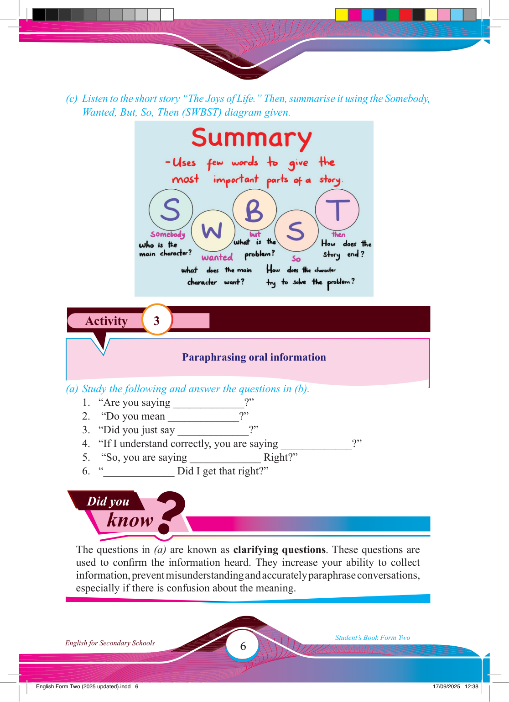

Did you
know
?
Activity 3
(c) Listen to the short story “The Joys of Life.” Then, summarise it using the Somebody,
Wanted, But, So, Then (SWBST) diagram given.
Paraphrasing oral information
(a) Study the following and answer the questions in (b).
1. “Are you saying _____________?”
2. “Do you mean _____________?”
3. “Did you just say _____________?”
4. “If I understand correctly, you are saying _____________?”
5. “So, you are saying _____________ Right?”
6. “_____________ Did I get that right?”
The questions in (a) are known as clarifying questions. These questions are used to confi rm the information heard. They increase your ability to collect information, prevent misunderstanding and accurately paraphrase conversations, especially if there is confusion about the meaning.
17/09/2025 12:38